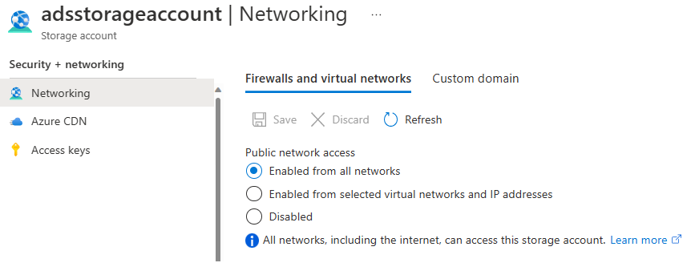
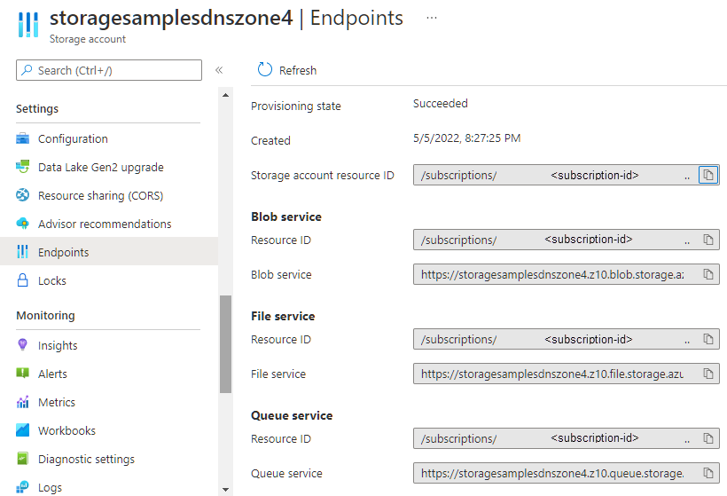

In the Azure portal, each Azure service requires certain steps to configure the service endpoints and restrict network access.
To access these settings for your storage account, you use the Firewalls and virtual networks settings. You add the virtual networks that should have access to the service for the account. - This setting restricts access to your storage account from specific subnets on virtual networks or public IPs.

The service endpoints for a storage account provide the base URL for any blob, queue, table, or file object in Azure Storage. Use this base URL to construct the address for any given resource.

Things to know about configuring service endpoints
Here are some points to consider about configuring service access settings:
-
You can configure the service to allow access to one or more public IP ranges.
-
Subnets and virtual networks must exist in the same Azure region or region pair as your storage account.
Important
Be sure to test the service endpoint and verify the endpoint limits access as expected.
Tip
Learn more with the Secure and isolate access to Azure resources by using network security groups and service endpoints training module. This module has a sandbox where you can restrict access to Azure Storage by using service endpoints.